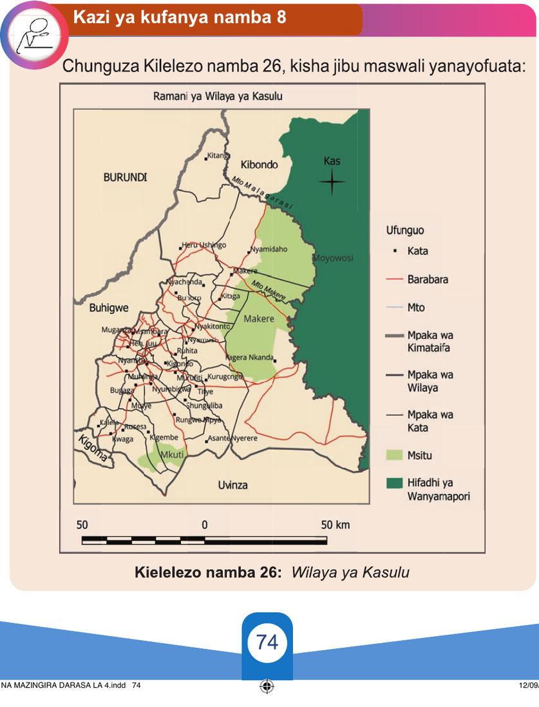

inayotofautiana kwa unene umbo au rangi hutumika kutofautisha aina ya mipaka ya kiutawala. Baadhi ya mipaka hubainika kwa kuwa na maumbo mbalimbali kama vile mito, maziwa, milima na barabara.
Kwa ujumla, kutambua mipaka ya kiutawala ni muhimu kwa madhumuni mbalimbali, ikiwemo utawala bora, kufanya maamuzi na usimamizi wa rasilimali za umma na kuwezesha utekelezaji wa sera na mipango ya maendeleo.

Kazi ya kufanya namba 8
Chunguza Kielelezo namba 26, kisha jibu maswali yanayofuata: